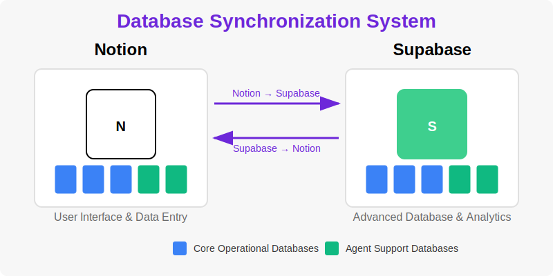

Interactive visualization of the 16-database structure with Notion and Supabase synchronization
This interactive diagram shows all 16 databases in The HigherSelf Network system and how they relate to each other. You can:
All 16 databases are synchronized between Notion and Supabase, providing the best of both worlds.
Central registry of all business entities in The HigherSelf Network, including The Connection Practice and The 7 Space.
Key fields: Name, Entity Type, API Keys Reference, Primary Workflows, Active Agents
Comprehensive database of all contacts, clients, and leads across all business entities.
Key fields: Name, Email, Phone, Contact Type, Business Entity, Tags, Lead Source
Tracks community members and their engagement across various platforms.
Key fields: Contact ID, Username, Membership Level, Join Date, Engagement Score
Catalog of all products and services offered by the business entities.
Key fields: Name, Type, Description, Price, Status, Inventory Count
Active workflow instances being processed by the system.
Key fields: Instance ID, Workflow ID, Status, Start Date, Business Entity, Current Step
Marketing initiatives and their performance metrics.
Key fields: Name, Description, Status, Start/End Dates, Target Audience, Channels
Customer feedback and survey responses.
Key fields: Title, Description, Status, Business Entity, Response Count, Average Rating
Reward programs and incentives for community members and clients.
Key fields: Name, Description, Reward Type, Status, Points Value, Monetary Value
Centralized task management across all business processes.
Key fields: Task Name, Status, Description, Priority, Due Date, Assigned To
Defines how agents communicate with each other in the system.
Key fields: Pattern Name, Description, Source Agent, Target Agent, Message Format
Registry of all agents in the system with their capabilities and status.
Key fields: Agent ID, Name, Description, Status, Capabilities, APIs Utilized
Catalog of all external API integrations used by the system.
Key fields: Name, Description, API Platform, Status, API Version, Auth Method
Registry of data transformation rules for converting data between systems.
Key fields: Name, Description, Source Format, Target Format, Transformation Logic
Templates for automated notifications sent by the system.
Key fields: Description, Channel, Content Template, Subject Template, Placeholders
Library of business use cases supported by the system.
Key fields: Title, Description, Business Value, Implementation Status, Related Workflows
Library of workflow definitions that can be instantiated by the system.
Key fields: Name, Description, Status, Business Entities, Trigger Type, Workflow Steps